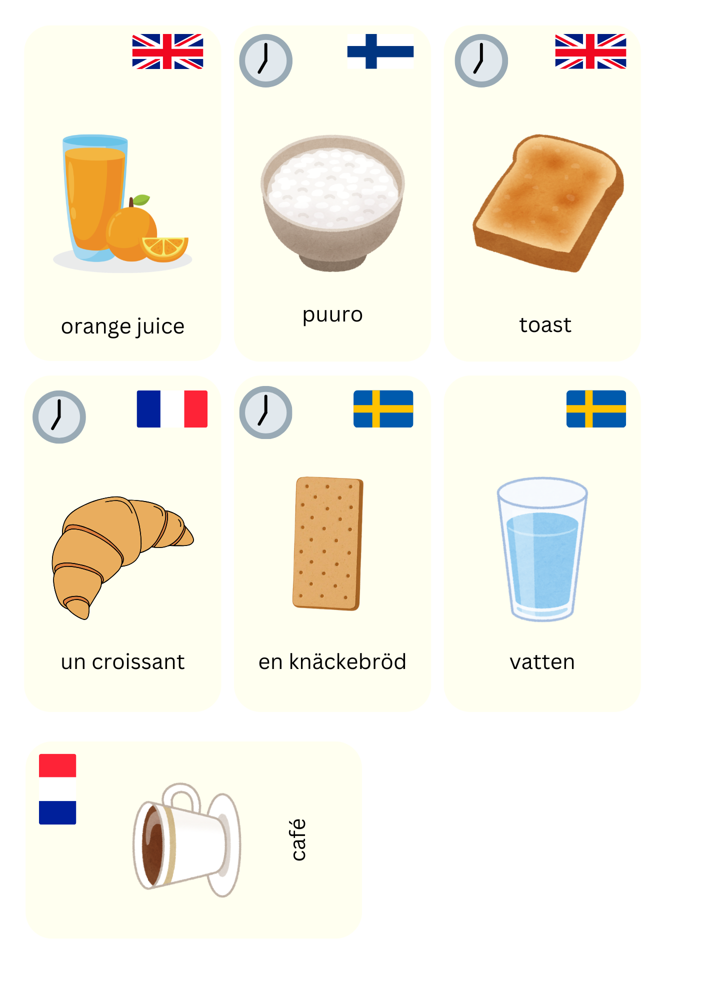
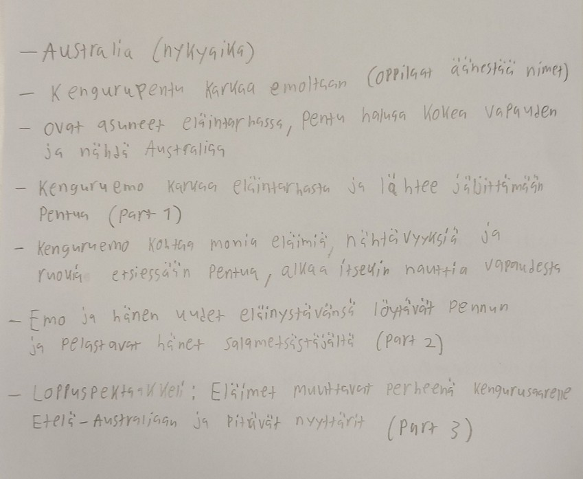
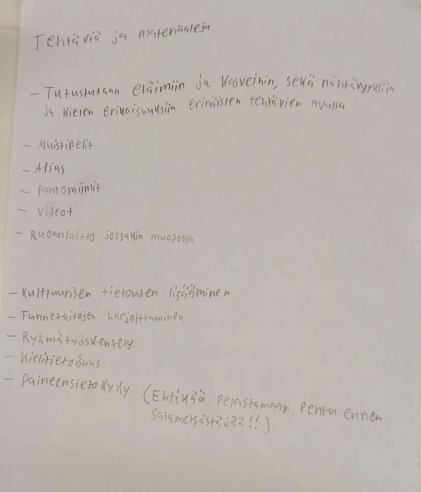
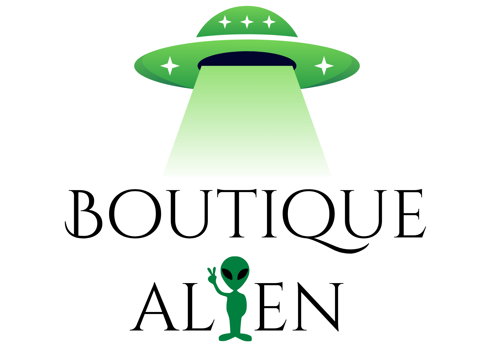

Näyteportfolio
Olen suunnitellut opetusmateriaaleja sekä opintojaksoilla että kurssien ja harjoitteluiden ulkopuolella.
Suunnittelin monikieliset pelikortit, joilla voisi pelata Hullunkuriset perheet -korttipeliä (eng. Go fish). Idean sain Kielten ja kulttuurien kohtaaminen kieltenopetuksessa -opintojaksolta, jossa yksi ryhmä esitti, että korttien avulla voitaisiin opiskella jotakin kielen osa-aluetta. Versiossani harjoiteltaisiin ruokasanoja, mutta kortteihin voisi myös vaihtaa vaikkapa eläimet.

Syventävän harjoittelun rinnakkaiskurssilla ryhmätyönä suunnittelimme Storyline-kokonaisuutta. Materiaali ei ole vielä täysin valmis, koska tarkemmat tehtävät ja tuntisuunnitelmat puuttuvat. Tunneilla oppilaiden tulee emokenguruna auttaa muita Australian eläimiä saadakseen apua kadonneen pentunsa etsintään. Eläimistä kootaan kenguruille uusi 'chosen family', jotka muuttavat asumaan yhteen Kengurusaarelle.


Suunnittelin ja toteutin yhteisopettajuutena toiminnallisen oppitunnin ekaluokkalaisille. Tunnilla kerrattiin aikaisemmilla tunneilla harjoiteltuja vaate- ja ruokasanoja sekä joitain fraaseja (How much, Can I have ..., please). Tunnilla oli kolme pistettä: yhdellä oppilaat tekivät itsenäisesti Wordwall-tehtäviä. Toisella oppilaat kävivät kahvilassa, jossa he ostivat erilaisia ruokia ja juomia. Kolmas piste oli vaatekauppa, jossa ostettiin alienille (vihreä paperinukke) vaatteita sekä liimata ne alienille päälle. Alla kuvia vaatekauppapisteeltä.


 Portfolion etusivu
Portfolion etusivu